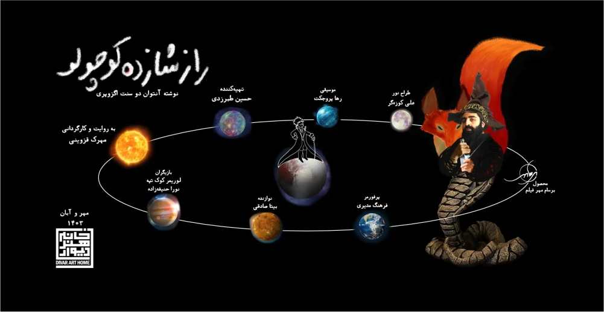

تاتر “راز شازده کوچولو” بر اساس نوشته آنتوان دو سنت اگزوپری، در خانه هنر دیوار به روی صحنه می رود.
مهرک قزوینی با برداشت خود از کتاب “شازده کوچولو” این تاتر را کارگردانی می کند و حسین طبرزدی تهیه کنندگی آن را بر عهده گرفته است.
ترجمه کتاب را علی معالی نیا بر عهده داشته و ویراستاری و تبدیل آن متن به نمایشنامه را مهرک قزوینی انجام داده است. لوریمر کوک تپه در هشت نقش پادشاه، خودپسند، میخواره، تجارت پیشه، جغرافی دان، سوزنبان، مار و روباه در این نمایش ظاهر خواهد شد و نورا حنیفه زاده، نقش گل سرخ محبوب شازده کوچولو را بازی خواهد کرد. فرهنگ مدیری، پرفورمرنقش خلبان یا در واقع خود اگزوپری است و صدای حسین طبرزدی را بر نقش خلبان خواهید شنید. شازده کوچولو، گوی نوری است که با صدای مهرک قزوینی صحبت می کند.
آهنگسازقطعه هایی که در تاتر “راز شازده کوچولو” نواخته خواهند شد، گروه راک “رها پروجکت” است که بیتا صادقی، نوازنده گیتار الکتریک این گروه، در طول اجرا، بازیگران را با نواختن گیتار همراهی خواهد کرد. علی کوزه گر، با طراحی نور به صحنه جان بخشیده و طراحی فضا و لباس و گرافیک کار بر عهده مهرک قزوینی بوده است. لباسها توسط ارا دیراین به مدیریت ریحانه حفظی و الهام حفظی و دوزندگی مقصود شکرزاده، اجرا شده اند. بی شک، تمام تلاش ها بدون همراهی دستیاران، سهراب برجسته و مهدی ریاضت و مونا قنبری که اجرای تیزرها را نیز بر عهده داشت، و دستیاران نور، امیرحسین سیر و پوریا محسنی و نازنین یارویسی و اکرم کیهانی فر، به نتیجه ی درخور، نمی رسید.
همراهی مهدی علی نژاد به عنوان مدیرسالن خانه هنر دیوار و صادق سیادت، مدیر روابط عمومی و مشاور رسانه ای نیز، سهم مهمی در مسیر اجرای “راز شازده کوچولو” دارد.